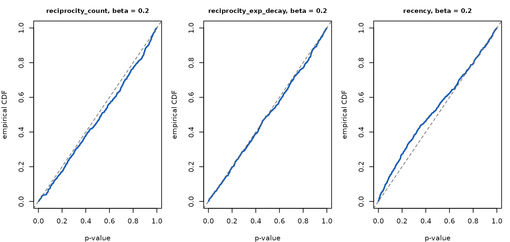

Goodness-of-fit calibration
The martingale-residual goodness-of-fit family
(gof_univariate(), gof_global(),
gof_auxiliary(), martingale_residuals())
reports p-values against an analytic null. This article measures the
type-I error of gof_univariate() under correct
specification: simulate from a model, fit the same
model, and collect the p-values. For a calibrated test they are
Uniform(0, 1), so the rejection rate at level α equals α.
Settings. A 20-actor one-mode network, the Gillespie simulator, 1,500 events, one control per case (the design the GoF uses), and 600 replicates per cell. With 600 replicates the Monte Carlo standard error of a rejection rate near 0.05 is about 0.009.
library(amorem)
library(parallel)
actors <- paste0("a", 1:20)
# one replicate under correct specification: simulate with a known effect,
# fit the same linear model, return the gof_univariate p-value
gof_rep <- function(i, beta, stat, half_life = NULL) {
set.seed(70000L + i)
ev <- simulate_relational_events(
n_events = 1500, senders = actors, receivers = actors,
endogenous_stats = stat, endogenous_effects = setNames(beta, stat),
half_life = half_life, method = "gillespie")
gof_univariate(ev, model = setNames("linear", stat), covariate = stat,
half_life = half_life, seed = 90000L + i)$p_value
}
cells <- list(
list(stat = "reciprocity_count", beta = 0.0),
list(stat = "reciprocity_count", beta = 0.1),
list(stat = "reciprocity_count", beta = 0.2),
list(stat = "reciprocity_count", beta = 0.3),
list(stat = "reciprocity_count", beta = 0.5),
list(stat = "recency", beta = 0.2),
list(stat = "reciprocity_exp_decay", beta = 0.2, half_life = 5))
p <- lapply(cells, function(g) unlist(mclapply(1:600, gof_rep, beta = g$beta,
stat = g$stat, half_life = g$half_life, mc.cores = 8)))The p-values from that run (amorem 1.1.0) are stored with this article, and the table and figure below are computed from them.
res <- readRDS("data/gof-calibration.rds")
tab <- do.call(rbind, lapply(split(res, list(res$stat, res$beta), drop = TRUE),
function(d) data.frame(
statistic = d$stat[1],
true_beta = d$beta[1],
replicates = sum(!is.na(d$p_value)),
reject_05 = mean(d$p_value < 0.05, na.rm = TRUE),
reject_10 = mean(d$p_value < 0.10, na.rm = TRUE),
ks_uniformity = suppressWarnings(stats::ks.test(stats::na.omit(d$p_value),
"punif")$p.value))))
tab <- tab[order(tab$statistic != "reciprocity_count", tab$statistic, tab$true_beta), ]
rownames(tab) <- NULL
knitr::kable(tab, digits = c(0, 1, 0, 3, 3, 4))| statistic | true_beta | replicates | reject_05 | reject_10 | ks_uniformity |
|---|---|---|---|---|---|
| reciprocity_count | 0.0 | 600 | 0.050 | 0.083 | 0.6699 |
| reciprocity_count | 0.1 | 600 | 0.045 | 0.077 | 0.0018 |
| reciprocity_count | 0.2 | 600 | 0.037 | 0.080 | 0.0673 |
| reciprocity_count | 0.3 | 600 | 0.047 | 0.113 | 0.4504 |
| reciprocity_count | 0.5 | 600 | 0.038 | 0.072 | 0.0000 |
| recency | 0.2 | 600 | 0.078 | 0.152 | 0.0006 |
| reciprocity_exp_decay | 0.2 | 600 | 0.048 | 0.097 | 0.5429 |
show <- list(c("reciprocity_count", 0.2), c("reciprocity_exp_decay", 0.2),
c("recency", 0.2))
op <- par(mfrow = c(1, 3), mar = c(4, 4, 2.5, 1))
for (s in show) {
pv <- sort(res$p_value[res$stat == s[1] & res$beta == as.numeric(s[2])])
plot(pv, seq_along(pv) / length(pv), type = "s", lwd = 2, col = "#1f5fb4",
xlim = c(0, 1), ylim = c(0, 1), xlab = "p-value", ylab = "empirical CDF",
main = sprintf("%s, beta = %s", s[1], s[2]), cex.main = 0.9)
abline(0, 1, lty = 2, col = "grey40")
}
par(op)Reading the results
-
Count statistic. For
reciprocity_countthe rejection rate at the 5% level ranges from 0.037 to 0.050 across true effects from 0 to 0.5, at most 1.5 Monte Carlo standard errors (0.009) from 0.05. The p-value distribution is not exactly uniform in every cell: the uniformity test gives p = 0.0018 at β = 0.1 and p = 7.1e-06 at β = 0.5, while the rejection rate at 5% stays at nominal. -
Decayed statistic.
reciprocity_exp_decayrejects at 0.048 (uniformity p = 0.543). -
Recency.
recencyrejects at 0.078, which is 3.2 Monte Carlo standard errors above 0.05 (uniformity p = 5.9e-04).
Guidance
- For count and decayed statistics, the p-values can be used at the 5% level in settings like these.
- For
recency, the test rejects a correct model more often than the nominal level (0.078 at 5%); read its p-value together with the cumulative residual process andmartingale_residuals(). - These cells cover one network size, one sample size and one control per case. The rejection rate as the number of controls grows has not been measured.
See the Estimation guide for the GoF API and Validation experiments for the recovery and parity studies (E1–E7).